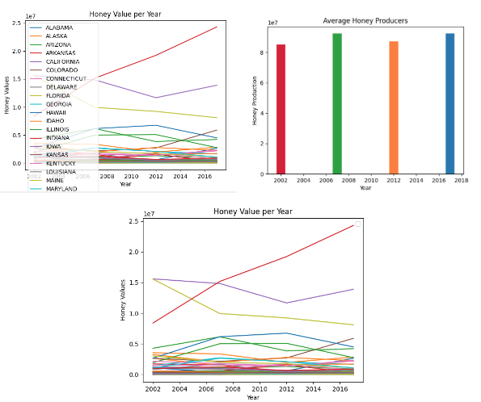
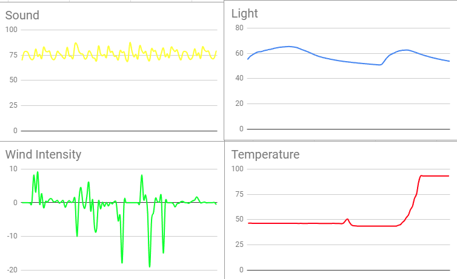

Home
Portfolio
About Me
This is my Portfolio Page!
This is my tic tac toe game

It is a traditional tictactoe game where the objective is to have 3 x's or o's in a row to win
This is my cookie clicker game

The player is given 30 seconds to click on the cookie which moves to random places and the more he/she clicks it, the higher the score gets
This is my Flappy Dino game

It is based off of the flappy bird game, where the player has to dodge the pipes in order to collect points. It is endless, but if the player hits a pipe, the score resets, and if the score reaches a certain amount, the backdrop changes
These are the graphs for our project which displays statistical data about honey producers

Two of the graphs display honey value per year of different states in the US, and the third graph displays the average amount of honey producers per year
Project 4.1.4 Presentation
This presentation my partners and I created explains the simulation model of bees searching for a hive. The model shows the proccess of the bees going to different hives and returning to their swarm where they create a dance path for other bees to travel to the hive they found. The model lets the user change the number of hives, the explore time of the bees, and the minimum number of bees exploring. The only turtles used in this simulation are the bees and the hives. Our group concluded that we should help increase the productivity and effiency of bees.
Project 3.1.6

This is our project where we interpreted data from a robot's sensors in different environments and used it to figure out what environment the robot was in